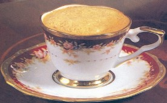

DIY摩卡咖啡
DIY摩卡薄荷咖啡

Copright©2008-2010 All Rights Reserved by aishangkafei
地址：河南省东源市沁安区一环东路爱尚咖啡 大厦 电话 0391-65212868 备案号：豫ICP备08012345
|
||
| 咖啡物语 |
DIY摩卡咖啡 |
|
| 爱尚文化 | 配制方法：在杯中加入巧克力糖浆20毫升和很浓的深煎炒咖啡，搅拌均匀，加入一大汤匙奶油浮在上面，削一些巧克力茉做装饰，最后再添加一些肉桂棒 | |
| 咖啡种类 |
||
| 咖啡DIY |
||
DIY摩卡薄荷咖啡 |
||
| 您的建议 | 配制方法：在杯中依次加入20克巧克力，深煎炒咖啡，一小汤匙白薄荷，再加一大汤匙奶油浮在上面，削上一些巧克力末，最后装饰一片薄荷叶即可 | |
| 联系我们 | ||
|
||
| DIY卡布奇诺 |  | |
| 配制方法：把深煎炒咖啡预先加热，倒入小咖啡杯内，加两小汤匙砂糖，再加一大汤匙奶油浮在上面，淋上柠檬汁或橙汁，用肉桂棒代替汤匙插入杯中 | ||
Copright©2008-2010 All Rights Reserved by aishangkafei 地址：河南省东源市沁安区一环东路爱尚咖啡 大厦 电话 0391-65212868 备案号：豫ICP备08012345 |
||